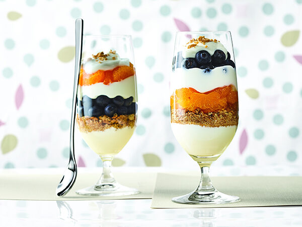

Maple & Mandarin Parfait
Meal Details
- Calories: Approximately 277 Calories per Serving
- Servings: 4
- Time to Prepare: 10 Minutes
Ingredients
- 2 cups of plain or maple yogurt
- 1/3 cup of pure maple syrup from Canada
- 10-oz can of whole mandarin segments
- 1 cup of fresh blueberries
- 6 oatmeal cookies (crumbled)
- Grated maple sugar or maple flakes
Instructions
- Mix yogurt with pure maple syrup.
- If not already crumbled, crumble the oatmeal cookies.
- With a spoon, layer all of the ingredients, except maple sugar, into 4 dessert cups or champagne glasses. There is no specific order you must follow in layering the ingredients.
- Sprinkle with maple sugar and serve immediatley.

Similar Recipes